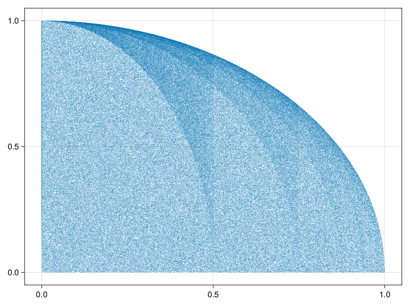
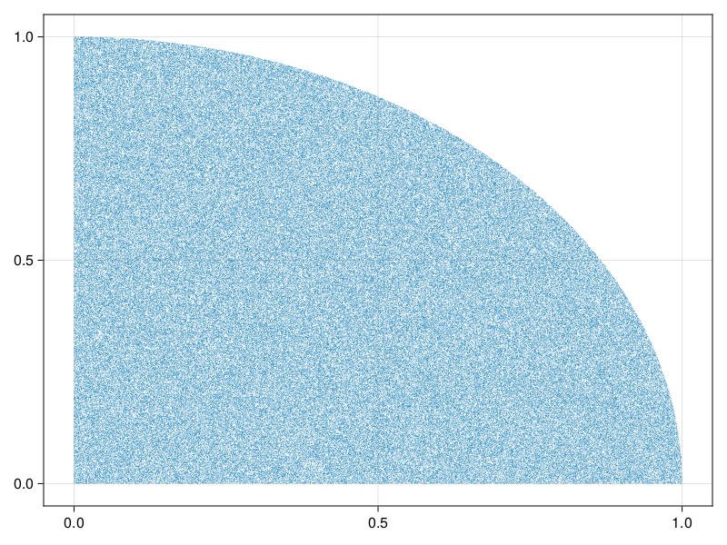

Generating Structs
While we can get pretty far with generating basic types like Int or String, sometimes we need to make additional guarantees or don't need to generate the full spectrum of possible values for a type, or need something more specific than what itype gives us. In these cases, we can create our own shrinker, by maping, filtering and interleaveing existing integrated shrinkers.
map
Suppose we have a type that can only hold even numbers. If we try to give it an odd number, it will throw an error on construction:
struct EvenNumber
val::Int
function EvenNumber(v)
iseven(v) || throw(ArgumentError("Argument '$(v)' is not an even number!"))
new(convert(Int, v))
end
endIf we try to check that this type truly can only hold even numbers, we can do it like so:
julia> function even_construction(x) try v = EvenNumber(x) catch e err = ArgumentError("Argument '$x' is not an even number!") return e == err && isodd(x) end return true endeven_construction (generic function with 1 method)julia> using PropCheckjulia> check(even_construction, itype(Int8))true
So far so good. But what now if we want to test some code that relies on this even number, and we don't care for testing whether the construction works in the first place? Naively, we can construct an integrated shrinker creating instances of EvenNumber like so:
julia> iEvenNumThrowing = map(EvenNumber, itype(Int8));
but this has the issue that creating objects of EvenNumber would try to create invalid instances, and throw an error:
try
# it's a 50/50 chance of throwing - this ought to be enough samples
for _ in 1:100_000
generate(iEvenNumThrowing)
end
catch e
e
endArgumentError("Argument '-79' is not an even number!")We can work around this by maping not only our constructor, but also by crafting the input to EvenNumber in such a way as to never trigger the error:
julia> iEvenNum = map(itype(Int8)) do i EvenNumber(div(i,2)*2) end;julia> check(iEvenNum) do en iseven(en.val) endtrue
This pattern can be extended indefinitely; the return type of map can itself be maped again, as it produces another integrated shrinker.
filter
While map is useful for cases where we can transform some invalid input into a valid one, filter can be used for rejecting some set of values entirely.
Consider this:
julia> using PropCheckjulia> i0to1 = isample(0:0.00001:1.0);julia> iquadr = filter(PropCheck.tuple(iconst(2), i0to1)) do tup sqrt(tup[1]^2 + tup[2]^2) <= 1 end;
We first define a generator for sampling numbers from 0.0:0.00001:1.0, and use that to create Tuple{Float64,Float64} consisting of coordinates in the first quadrant of the unit circle. Let's confirm that this is the case:
julia> check(iquadr) do coords sqrt(coords[1]^2 + coords[2]^2) <= 1 endtrue
And sure enough, the trivial property holds - we filtered for it after all. What if we now want to filter for a band of values, for example an arch with outer radius 1.0 and inner radius 0.8? This rejects a large portion of (so far) legal values:
julia> iarch = filter(iquadr) do tup sqrt(tup[1]^2 + tup[2]^2) >= 0.8 end;julia> try for _ in 1:100_000 generate(iarch) end catch e e endStackOverflowError()
Even just trying to generate such a value, with naive filtering, leads to a stackoverflow, or worse, close to infinite loops. This is because filter tries to be optimistic - when it encounters a value that doesn't match its filter criterion, it tries the shrinks of that value as well. In the case of our donut shaped filtering combination, this tries a huge number of additional examples that we know we can reject outright, because their shrinks can never be valid outputs; once the distance from the origin of a point is less than 0.8, any shrinks of those coordinates must be closer to the origin yet again, making the shrunk coordinates trivially rejectable. To communicate this to filter, we can pass a third argument trim, steering whether filter should trim shrinks of a rejected value entirely or not:
julia> iarch = filter(iquadr, true) do tup sqrt(tup[1]^2 + tup[2]^2) >= 0.8 end;julia> generate(iarch)Tree((0.4729826308824606, 0.87261))
Bias
Even though the returned numbers lie in our desired band, they are biased because our first filtering step did not reject shrinks, but instead tried them as well. This results in clumping of values:

This can be easily fixed, by just trimming the values of the first generator as well, resulting in this distribution:
iquadrUnbias = filter(PropCheck.tuple(iconst(2), i0to1), true) do tup
sqrt(tup[1]^2 + tup[2]^2) <= 1
end
The plots were produced with this script:
using CairoMakie
pointsBias = [ root(generate(iquard)) for _ in 1:500_000 ]
pointsUnbias = [ root(generate(iquardUnbias)) for _ in 1:500_000 ]
scatter(pointsBias; markersize=0.8)
scatter(pointsUnbias; markersize=0.8)This bias may not be an issue in every applicable situation, but should be considered in general. Do note that this only shows the first level of produced values; the shrinking function may introduce another layer of bias not shown here.
Considerations when using filter
Filtering comes at an additional cost - due to the nature of filter, it may reject all produced values and exhaust the generator, which ends up producing Nothing. As such, filter may not return any values at all, introducing a type instability.
Further, because filter needs to attempt to generate a value before it can decide whether or not the value needs to be filtered out, you may encounter additional overhead if the set of values that could be generated is close to the set of values that are rejected. I.e., if you reject most of the values generated by a generator as in the idonut example above, it is usually better to try to construct your values such that they don't need to be filtered in the first place, instead of filtering after the fact. In the example shown above, it would have been better to generate values from isample(0.8:0.00001:1.0) in the first place. Filtering really should only be a last resort.
In some cases, such as when sampling a PropCheck.vector from an isample(3:8), filtering can't be avoided, because the generated Vectors need to have a length of at least 3.
interleave
We've seen so far how to generate plain values from types, create simple structs, as well as filter & map functions over integrated shrinkers. Now, let's take a look at how to create more complicated objects implicitly, with interleave.
Consider this struct:
using PropCheck
struct Person
name::String
age::Int
height::Int
favorite_color::String
function Person(name::String, age::Int, height::Int, favorite_color::String)
age < 0 && throw(ArgumentError("`age` must be a positive `Int`!"))
height < 0 && throw(ArgumentError("`height` must be a positive `Int`!"))
new(name, age, height, favorite_color)
end
endHow might we construct objects of this type? We know that there's at least one constructor, the three-arg Person, which ensures that we can only create Person objects that satisfy our criteria. Naively, we need at least a 4-tuple of values that we could splat into Person, like Person(("Agnes", 26, 178, "Violet")...) and we know that we could create such a tuple with type(Tuple{String,Int,Int,String}), but this has a few issues:
- We'd have to filter out or
mapany tuples that have an age or height less than0manually. - We have no control over the exact
nameandfavorite_colorstrings. - We have no control over the shrinking of each field; We may want to create a generator that doesn't shrink the persons name, for example.
Let's first define some generators we might want to use for the individual fields, starting out with age and height:
julia> iage = isample(0:125); # the oldest living person at time of writing is 116; the oldest recorded was 122julia> iheight = isample(0:300); # 3 meters is a reasonable maximum
For the name, we'd like to sample from a pool of names (though depending on what we want to test, we may want to generate arbitrary unicode instead, to check that we're handling it correctly!) and we'd also like to prevent shrinking of the name. Sampling from a pool of names can be done with isample, just as with age and to prevent shrinking we can pass PropCheck.noshrink, which just returns an empty list, indicating no shrinks, as the shrinking function:
julia> names = ["Agnes", "Bert", "Charlie", "Diana", "Emma", "Fredrick", "Ruby"]7-element Vector{String}: "Agnes" "Bert" "Charlie" "Diana" "Emma" "Fredrick" "Ruby"julia> iname = isample(names, PropCheck.noshrink);
Similarly, we'd like to sample their favorite colours and not shrink them as well:
julia> colours = ["Red", "Blue", "Green", "Yellow", "Beige", "Ruby", "Amber", "Crystal", "Dark Blue", "Ivory"];julia> icolor = isample(colours, PropCheck.noshrink);
On their own, these generators simply create their usual objects:
julia> generate(iage)Tree(18)julia> generate(iheight)Tree(60)julia> generate(iname)Tree(Fredrick)julia> generate(icolor)Tree(Beige)
with iname and icolor of course having no shrinks:
julia> generate(iname) |> subtrees |> isemptytruejulia> generate(icolor) |> subtrees |> isemptytrue
We can combine these individual integrated shrinkers into one by using the interleave function, which returns an integrated shrinker that produces tuples of the passed in values:
julia> iargs = interleave(iname, iage, iheight, icolor);julia> generate(iargs)Tree(("Diana", 63, 234, "Crystal"))
To now build a person from all these ingredients, all we need to do is splat that generated tuple into our constructor:
julia> iperson = map(splat(Person), iargs);julia> generate(iperson)Tree(Main.Person("Ruby", 54, 241, "Beige"))
which we can of course use to check some property:
julia> check(iperson; ntests=10_000) do p if p.name == p.favorite_color p.age < 22 else true end end┌ Info: Found counterexample for '#1', beginning shrinking... └ Counterexample = Main.Person("Ruby", 65, 21, "Ruby") [ Info: 10 counterexamples found for #1 Main.Person("Ruby", 22, 0, "Ruby")
Returning the only combination of names and colours that matches; Person("Ruby", 22, 0, "Ruby"), who rightfully didn't let anyone tell her that her favorite color can't be the same as her name.
Note how interleave managed to shrink both the age, as well as the height from the initial counterexample. This is the strength of interleave, compared to just naively generating the the arguments one-by-one and constructing the object manually, instead of letting PropCheck do it for you.